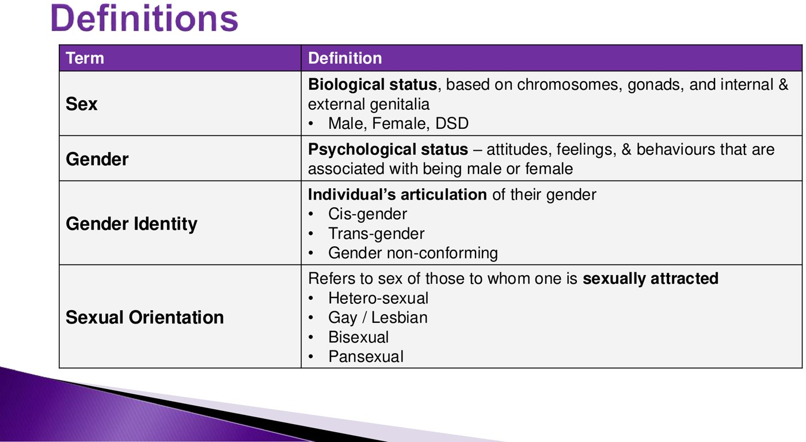
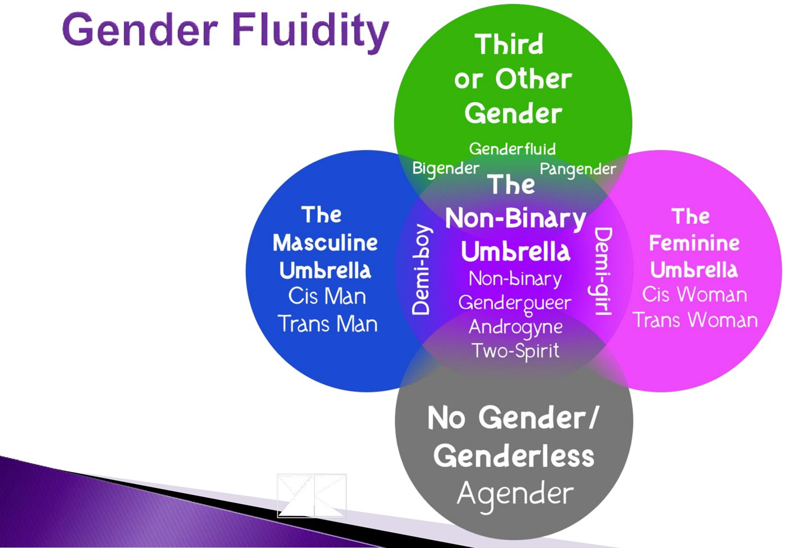
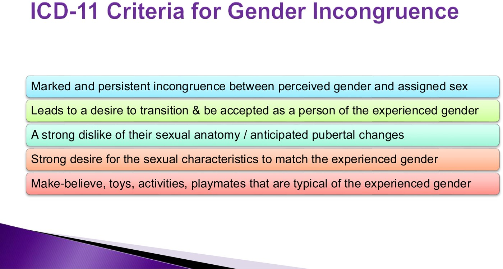
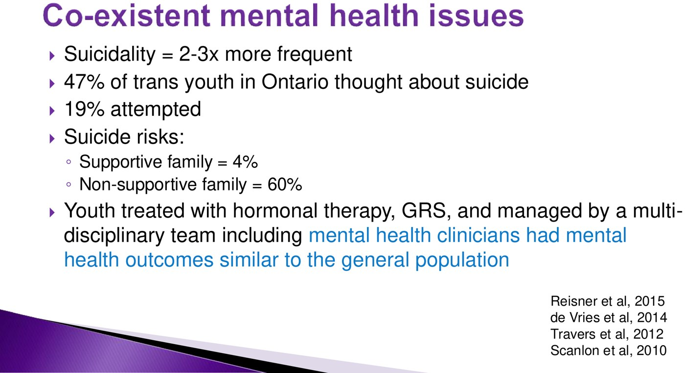
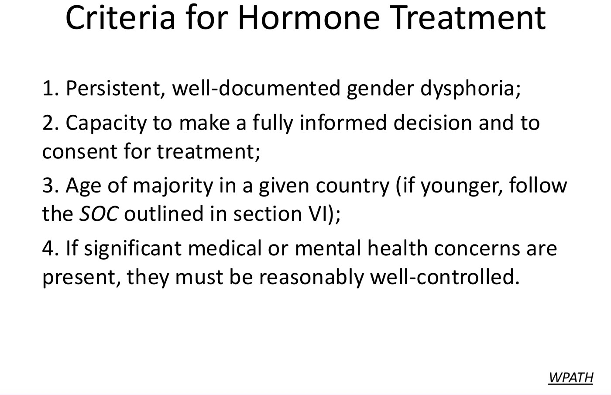
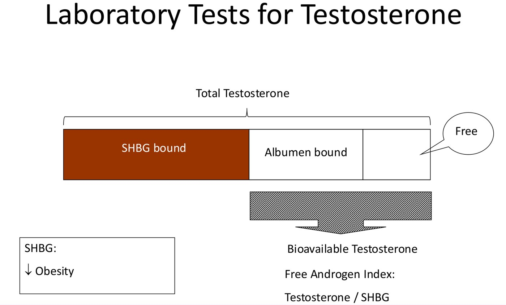
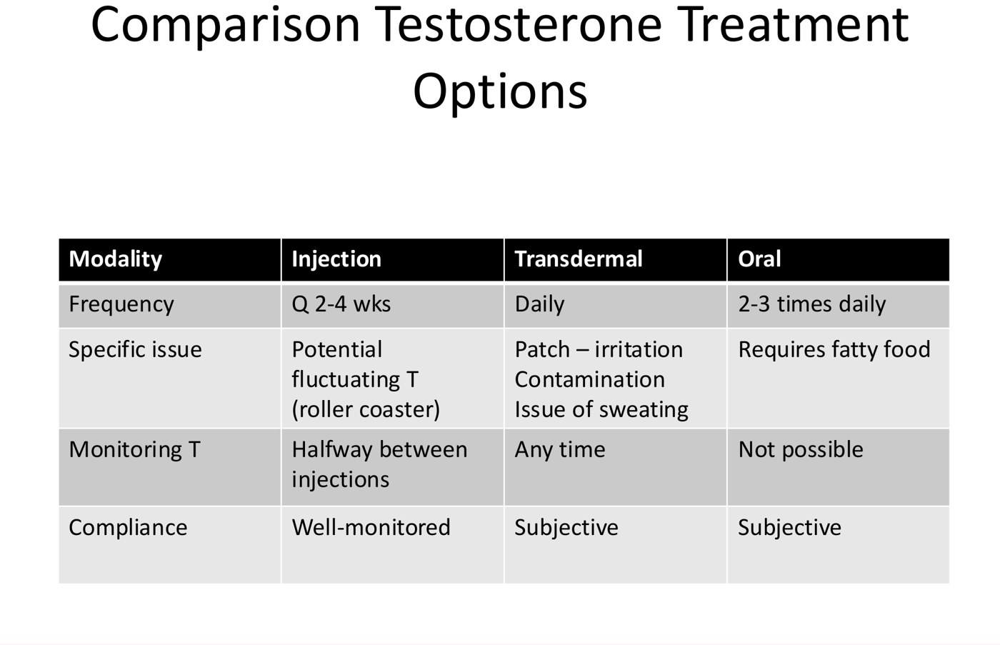
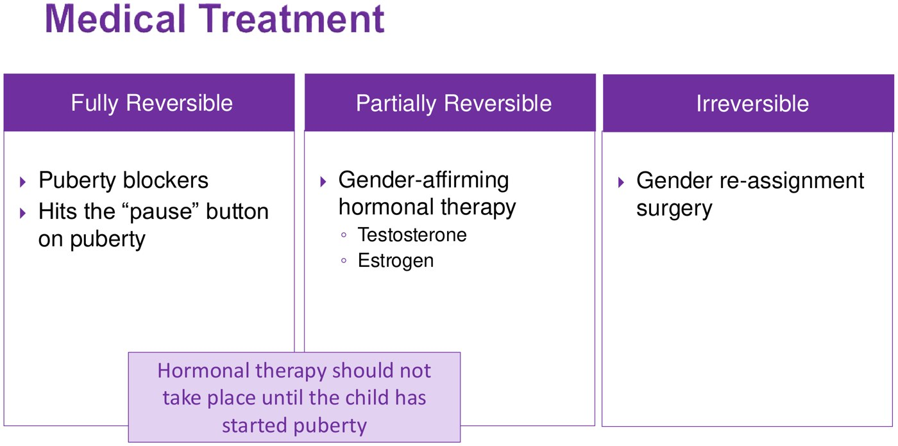
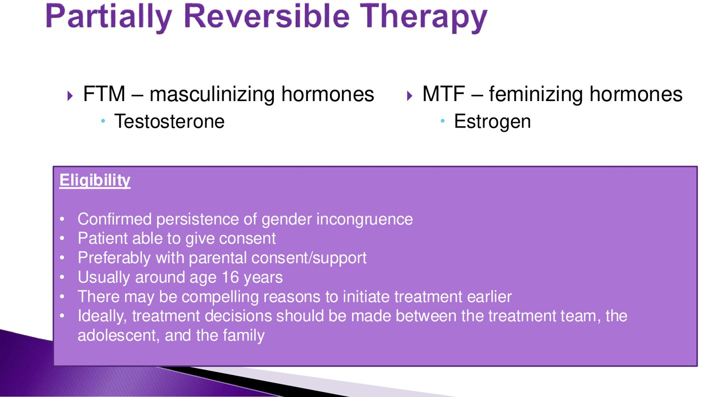
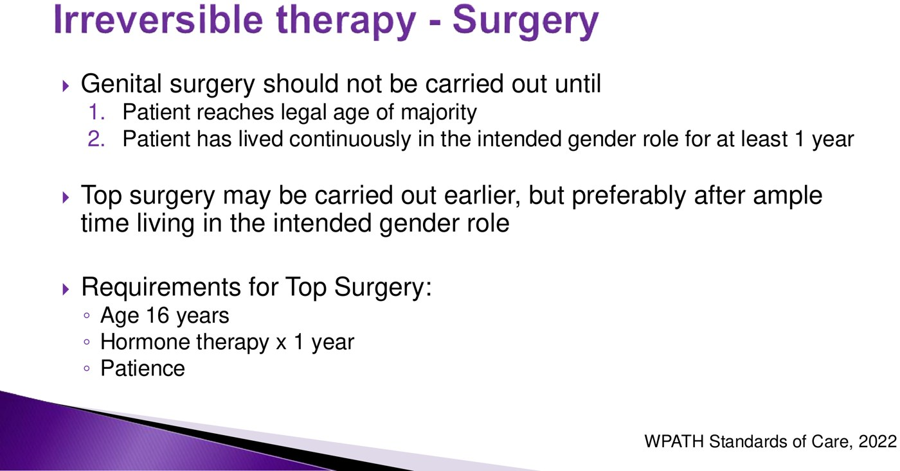

Introduction to Transgender Medicine
- Four different things: sex (biology), gender (psychology and social role), gender identity (how a person experiences and expresses themselves: cis, trans, non-binary and more) and sexual orientation (who they're attracted to). Gender dysphoria is the distress that can come with a mismatch between identity and assigned sex.
- The diagnosis is made by talking to the patient (ICD-11 gender incongruence). You're looking for insistence, persistence and consistence. Guidelines: WPATH Standards of Care 8 (2022) and the Endocrine Society (2017).
- Mental health is the urgent part. Suicidality is 2–3× higher; in Ontario 47% of trans youth have thought about suicide and 19% have attempted. Family support changes everything: about 4% suicide risk with a supportive family vs about 60% without. With proper care, outcomes match the general population.
- Adults: suppress the body's own hormones, then replace with the affirmed ones. Trans women: estrogen + an anti-androgen (spironolactone → check potassium). Trans men: testosterone → check hematocrit. Monitor every 3 months in year 1, then once or twice a year. Screen for cancer based on the organs present.
- Youth: three separate decisions. Nothing medical before puberty. Then blockers (fully reversible, from Tanner 2), hormones (partly reversible, around 16) and surgery (irreversible; top surgery at 16 after a year on hormones). Discuss fertility before any of it.
Learning Objectives
- Review the diagnostic criteria for gender incongruence and gender dysphoria.
- Develop an approach to the care of a pediatric transgender or gender-nonconforming individual.
- Develop an approach to a patient looking for support in social and medical transition, adult and pediatric.
- Review the guidelines for starting gender-affirming hormone therapy.
- Compare the risks of other health issues in the transgender population with those of the general population.
- Plan a gender-inclusive environment in your clinic.
Two recorded talks from a symposium: Dr. Van Uum (adult endocrinology, the diagnosis and hormone treatment of adults) and Dr. Stein (pediatric endocrinology, London's Pediatric Gender Pathway Service). The inclusive-language section at the start of 3.6 is the same idea applied to the anatomy lab.
The Words, the Diagnosis and the Numbers
Dr. Stein's groundwork: what the terms mean, how the diagnosis is made, and why mental health comes first.
Definitions

Four separate ideas. Knowing someone's sex tells you nothing about their gender identity, and neither tells you their sexual orientation.
Not a binary. Beyond cis and trans men and women there are non-binary, genderfluid, two-spirit, agender and other identities. The slide is a guide, not a complete list; use the words the patient uses.| Term | Plain meaning |
|---|---|
| Sex | Biological status: chromosomes, gonads, internal and external genitalia (male, female, or a DSD; see 3.9) |
| Gender | Psychological status: attitudes, feelings and behaviours associated with being male, female, or elsewhere on the spectrum |
| Gender identity | How a person perceives and presents themselves. Cisgender = matches the sex assigned at birth; transgender = differs from it; plus the whole spectrum between |
| Sexual orientation | Who someone is attracted to (heterosexual, gay, lesbian, bisexual, pansexual). A separate question from identity |
| Gender dysphoria | Distress about a mismatch between identity and assigned sex, often with anxiety, depression and mood problems, and made worse by social stigma, isolation and rejection |
Making the Diagnosis
Parents often ask: how do you know this isn't a phase? The answer is the guidelines plus, above all, listening to the young person's story over time.
- WPATH (World Professional Association for Transgender Health) Standards of Care, version 8 (2022): the main guideline used by Canadian pediatric centres and worldwide.
- Endocrine Society clinical practice guideline (2017): North American, and it overlaps heavily with WPATH.

ICD-11 gender incongruence (the criteria WPATH uses). The last bar, play, toys and playmates, applies to younger children.What you're really looking for, in three words:
| Insistence | They are clear this is their true gender identity |
| Persistence | It has been going on for a long time, even if they only told people recently |
| Consistence | It stays the same as you follow them in clinic: male, female, non-binary, or consistently fluid |
The slide quotes WPATH's board: gender diversity is a common and culturally diverse human phenomenon that should not be judged as inherently pathological or negative. The diagnosis exists to open the door to care, not to label the identity as a disease.
Asking About It: the Initial Assessment
Gender identity questions belong in every adolescent HEADSS history. Simple, open questions work best.
![Slide titled Initial Clinical Assessment, a table of examples of gender non-conforming behaviours and suggested questions. Gender identity different from assigned sex: some young people feel they were born in the wrong body; have you ever felt like that? Persistence of gender identity differing from assigned sex: for how long have you felt that you were a girl or boy? How did puberty affect you or your identity? Gender non-conforming behaviour: what kind of toys would you like to play with? Do you prefer to wear girls or boys underwear? What would you like to wear when you swim? Who are your favourite fantasy characters? Evaluation of source of distress: what kinds of thoughts make you feel sad? What do you think about your body? Lopez et al, 2016.](../../../../assets/images/week-3/transgender-care/stein-assessment.jpg)
How Common, and Why Mental Health Comes First
![Slide titled Trans-Gender Prevalence Data. Canadian census data (2022): 1 in 300 individuals age 15 and older identify as trans-gender or non-binary; 2/3 were younger than 35 years. Pediatric data from international high school surveys: 1.2% to 4.1% of adolescents reporting a gender identity different from that assigned at birth. A yellow box quotes WPATH Board of Directors 2010: the expression of gender characteristics, including identities, that are not stereotypically associated with one's assigned sex at birth is a common and culturally-diverse human phenomenon that should not be judged as inherently pathological or negative. Stats Canada 2022; Bonafacio et al 2019.](../../../../assets/images/week-3/transgender-care/stein-prevalence.jpg) About 1 in 300 Canadians aged 15+ are transgender or non-binary (2021 Census, published 2022), and two-thirds are under 35. Probably an underestimate: under-15s aren't counted and it's a general census form. School surveys: 1.2–4.1% of adolescents.
About 1 in 300 Canadians aged 15+ are transgender or non-binary (2021 Census, published 2022), and two-thirds are under 35. Probably an underestimate: under-15s aren't counted and it's a general census form. School surveys: 1.2–4.1% of adolescents.

The most important slide in the lecture. Suicidality 2–3× higher; 47% of Ontario trans youth have thought about suicide and 19% have attempted. A supportive family: about 4%; a non-supportive one: about 60%. With hormones, surgery and a team that includes mental health, outcomes match the general population.Anxiety, mood disorders and suicidality are common. The single biggest thing that moves the risk isn't a drug: it's whether the young person is listened to and supported, at home and in your clinic. Screening for suicidality, connecting families to support, and not making the young person fight to be believed are all treatment.
Adults: Hormone Treatment
Dr. Van Uum's talk: who can start, what they get, how you monitor it, and the risks.
Who Can Start, and What Happens First

WPATH criteria for adults: (1) persistent, well-documented gender dysphoria; (2) capacity to decide and consent; (3) age of majority (youth follow their own pathway); (4) other medical or mental health issues reasonably well controlled. Those issues don't exclude anyone.![Slide titled Before starting hormone treatment: 1. perform initial evaluation including discussion of physical transition goals, health history, physical examination, risk assessment and relevant laboratory tests; 2. discuss the expected effects of feminizing or masculinizing medications and possible adverse health effects, including reduced fertility, so reproductive options should be discussed before starting; 3. confirm capacity to understand risks and benefits; 4. provide ongoing medical monitoring; 5. communicate with the primary care provider, mental health professional and surgeon; 6. if needed, provide a brief written statement that they are under medical supervision on hormone therapy. WPATH.](../../../../assets/images/week-3/transgender-care/vu-before-starting.jpg) The pre-treatment checklist. Note item 2: hormones reduce fertility, so reproductive options come up before the first dose (sometimes with a referral to reproductive endocrinology).
The pre-treatment checklist. Note item 2: hormones reduce fertility, so reproductive options come up before the first dose (sometimes with a referral to reproductive endocrinology).
- If you're the family doctor: document the dysphoria when it first comes up. Six months or a year of notes makes the referral much stronger.
- A psychosocial assessment by a qualified professional confirms the diagnosis and readiness. In some countries it must be a mental health professional; in Canada it can be a family doctor or other trained clinician.
- The endocrinologist's role: start treatment safely, advise on doses and side effects, and handle problems. Usually not the one who makes the diagnosis, and not able to follow everyone long term, so patients are set on the right path and handed back to primary care.
- Patients may need a written letter confirming they are on supervised hormone therapy, for travel, documents and other situations.
Two Goals, Two Regimens
Adult hormone therapy does two things (Endocrine Society 2017):
- Suppress the body's own sex hormones, reducing the secondary sex characteristics of the assigned sex.
- Replace them with hormones that match the gender identity, using the same principles as treating hypogonadism.
| Trans women (feminizing) | Trans men (masculinizing) | |
|---|---|---|
| Replace with | Estradiol: oral or transdermal patch; rarely injection | Testosterone: injection (enanthate or cypionate) or transdermal gel/patch |
| Suppress with | An anti-androgen: spironolactone (androgen-receptor blocker; the usual choice in North America), cyproterone acetate (more common in Europe), or a GnRH agonist (shuts down LH/FSH, so testosterone falls) | Usually not needed: testosterone at male levels suppresses the ovaries |
Dr. Van Uum is explicit: you don't need to know the doses.
What Changes, and When
![Table 13, Feminizing Effects in Transgender Females, with onset and maximum: redistribution of body fat 3 to 6 months, 2 to 3 years; decrease in muscle mass and strength 3 to 6 months, 1 to 2 years; softening of skin, decreased oiliness 3 to 6 months, unknown; decreased sexual desire 1 to 3 months, 3 to 6 months; decreased spontaneous erections 1 to 3 months, 3 to 6 months; male sexual dysfunction variable; breast growth 3 to 6 months, 2 to 3 years; decreased testicular volume 3 to 6 months, 2 to 3 years; decreased sperm production unknown, more than 3 years; decreased terminal hair growth 6 to 12 months, more than 3 years; scalp hair variable; voice changes none. EndoGuideline 2017.](../../../../assets/images/week-3/transgender-care/vu-feminizing-effects.jpg) Feminizing: most changes start at 3–6 months and peak at 2–3 years (fat redistribution, breast growth, smaller testes). Voice: no change. Estrogen can't undo what testosterone did to the larynx.
Feminizing: most changes start at 3–6 months and peak at 2–3 years (fat redistribution, breast growth, smaller testes). Voice: no change. Estrogen can't undo what testosterone did to the larynx.
![Table 12, Masculinizing Effects in Transgender Males, with onset and maximum: skin oiliness or acne 1 to 6 months, 1 to 2 years; facial and body hair growth 6 to 12 months, 4 to 5 years; scalp hair loss 6 to 12 months; increased muscle mass and strength 6 to 12 months, 2 to 5 years; fat redistribution 1 to 6 months, 2 to 5 years; cessation of menses 1 to 6 months; clitoral enlargement 1 to 6 months, 1 to 2 years; vaginal atrophy 1 to 6 months, 1 to 2 years; deepening of voice 6 to 12 months, 1 to 2 years. EndoGuideline 2017.](../../../../assets/images/week-3/transgender-care/vu-masculinizing-effects.jpg) Masculinizing: changes start at 1–6 months, but the full effect can take up to 4–5 years (facial and body hair). Voice deepens on testosterone. Periods stop within 1–6 months.
Masculinizing: changes start at 1–6 months, but the full effect can take up to 4–5 years (facial and body hair). Voice deepens on testosterone. Periods stop within 1–6 months.
Why the table matters: patients need realistic expectations of what will change, how much, and how long it takes. The lecturers suggest giving it in writing.
Monitoring
| Trans women (on estrogen) | Trans men (on testosterone) | |
|---|---|---|
| How often | Every 3 months in the first year, then 1–2 times a year | |
| Hormone levels | Testosterone suppressed to < 50 ng/dL (female range); estradiol no higher than the peak physiologic range, 100–200 pg/mL | Testosterone in the normal male range (400–700 ng/dL). Injections: measure midway between doses (weekly shot: day 3–4; every 2 weeks: day 6–8). Gel: any time after the first week |
| The drug-specific lab | Potassium (and electrolytes) on spironolactone | Hematocrit / hemoglobin: testosterone causes erythrocytosis |
| Bone | Consider bone density, especially if hormones are stopped or taken irregularly, or after gonadectomy | |
| Cancer screening | Screen the organs that are there: mammography if there is breast tissue, prostate screening if there is a prostate, Pap tests if there is a cervix | |
From the Endocrine Society monitoring tables shown in the lecture (Tables 14 and 15). The estradiol target is given in pg/mL; in the recording it is roughly converted to pmol/L. For reference, 100–200 pg/mL is about 370–730 pmol/L.
Reading a Testosterone Level

Total testosterone has three parts. Only the albumin-bound and free parts can reach the cells: the bioavailable testosterone.| Fraction | Bound how | Active? |
|---|---|---|
| SHBG-bound | Tightly, to sex hormone-binding globulin | No |
| Albumin-bound | Loosely; lets go easily in the tissues | Yes |
| Free | Not bound (a small fraction) | Yes |
- Bioavailable T = albumin-bound + free. Free androgen index = testosterone ÷ SHBG.
- Routine monitoring uses total testosterone, because bioavailable T costs more and varies more.
- Check bioavailable T when the total doesn't match the clinical picture. Obesity and insulin resistance lower SHBG, so total T looks low while bioavailable T is normal.
Testosterone: Injection, Gel or Pill?

| Injection | Transdermal gel/patch | Oral capsules | |
|---|---|---|---|
| How often | Every 1–2 weeks (sometimes 4) | Daily | 2–3 times a day |
| Catch | Level rises then falls: a "roller coaster" | Skin irritation; transfer to others; lost with sweating (e.g. applying it, then going to the gym) | Needs fatty food to be absorbed; levels spike and crash within hours |
| Monitoring | Halfway between injections | Any time | Practically impossible |
| Adherence | Documented (given by a clinician) | Self-reported | Self-reported |
Risks of Hormone Therapy
![Table 2, risks associated with hormone therapy, part 1. Likely increased risk: feminizing hormones, venous thromboembolic disease, gallstones, elevated liver enzymes, weight gain, hypertriglyceridemia; masculinizing hormones, polycythemia, weight gain, acne, androgenic alopecia (balding), sleep apnea. Likely increased risk with presence of additional risk factors: feminizing, cardiovascular disease. Possible increased risk: feminizing, hypertension, hyperprolactinemia or prolactinoma; masculinizing, elevated liver enzymes, hyperlipidemia. WPATH.](../../../../assets/images/week-3/transgender-care/vu-risks-1.jpg) Likely increased risk. Estrogen: VTE, gallstones, raised liver enzymes, weight gain, high triglycerides. Testosterone: polycythemia, weight gain, acne, balding, sleep apnea.
Likely increased risk. Estrogen: VTE, gallstones, raised liver enzymes, weight gain, high triglycerides. Testosterone: polycythemia, weight gain, acne, balding, sleep apnea.
![Table 2, risks associated with hormone therapy, part 2. Possible increased risk with presence of additional risk factors: feminizing, type 2 diabetes; masculinizing, destabilization of certain psychiatric disorders, cardiovascular disease, hypertension, type 2 diabetes. No increased risk or inconclusive: feminizing, breast cancer; masculinizing, loss of bone density, breast cancer, cervical cancer, ovarian cancer, uterine cancer. Footnotes: risk is greater with oral estrogen than transdermal; bipolar, schizoaffective and other disorders may include manic or psychotic symptoms, appearing associated with higher doses or supraphysiologic levels. WPATH.](../../../../assets/images/week-3/transgender-care/vu-risks-2.jpg) Possible, or no clear, increase. Breast and reproductive cancers: no increase shown (hypothesized but not proven). Diabetes: unclear. VTE risk is higher with oral estrogen than transdermal.
Possible, or no clear, increase. Breast and reproductive cancers: no increase shown (hypothesized but not proven). Diabetes: unclear. VTE risk is higher with oral estrogen than transdermal.
| Risk level | Estrogen (feminizing) | Testosterone (masculinizing) |
|---|---|---|
| Likely increased | Venous thromboembolism, gallstones, raised liver enzymes, weight gain, hypertriglyceridemia | Polycythemia, weight gain, acne, androgenic alopecia, sleep apnea |
| Likely, if other risk factors | Cardiovascular disease | — |
| Possible | Hypertension, hyperprolactinemia or prolactinoma (rare) | Raised liver enzymes, hyperlipidemia |
| Possible, if other risk factors | Type 2 diabetes | Psychiatric destabilization, cardiovascular disease, hypertension, type 2 diabetes |
| No increase / inconclusive | Breast cancer | Bone loss, breast, cervical, ovarian and uterine cancer |
Before estrogen, ask about VTE: a personal or family history of clots changes the plan. Before and on testosterone, follow the hematocrit: testosterone drives red cell production, and it mustn't climb too high. Both are the "likely increased" risks at the top of the table.
Surgery
![Slide titled Referral for Surgery: WPATH surgical treatments for gender dysphoria can be initiated by a referral (one or two, depending on the type of surgery) from a qualified mental health professional. The mental health professional provides documentation in the chart and/or referral letter of the patient's personal and treatment history, progress and eligibility. Mental health professionals who recommend surgery share the ethical and legal responsibility for that decision with the surgeon. Ontario: referral requires two health care providers to support referral.](../../../../assets/images/week-3/transgender-care/vu-surgery-referral.jpg)
Children and Adolescents
Dr. Stein's talk: three separate steps, each its own decision, and none of them before puberty.
Three Steps, Three Decisions

Step 1: Puberty Blockers
![Slide titled Reversible Therapy: puberty blockers allow time to assess the persistence of the affirmed gender as the child matures, but before undergoing physical changes of puberty; improved behavior, emotional and depressive symptoms. Criteria for treatment with puberty blockers: long-lasting history of gender nonconformity or gender dysphoria; gender dysphoria worsened with the onset of puberty; co-existing psychological, medical or social problems that could interfere with treatment have been addressed; achieved Tanner 2 pubertal development; informed consent. A pause-button icon.](../../../../assets/images/week-3/transgender-care/stein-blockers.jpg) The pause button. A GnRH agonist (Lupron, leuprolide) turns off LH and FSH, so the gonads go quiet.
The pause button. A GnRH agonist (Lupron, leuprolide) turns off LH and FSH, so the gonads go quiet.
Criteria:
- Long-lasting gender nonconformity or dysphoria (insistence, persistence, consistence).
- Dysphoria worsened at the onset of puberty.
- Other psychological, medical or social problems addressed: supported, not necessarily cured.
- Reached Tanner stage 2.
- Informed consent.
| Blockers slow or stop | Why it helps |
|---|---|
| Pubertal development · linear growth · androgen-dependent hair · voice deepening · breast or testicular/penile growth · menstruation · libido · "teenage behaviour" | Time to keep exploring identity without the distress of breasts, erections or periods that don't fit. Mood and depressive symptoms improve |
The pituitary only responds to GnRH that comes in pulses. A long-acting agonist gives a constant signal, which down-regulates the pituitary's GnRH receptors, so LH and FSH fall. Stop it and pulsing resumes: puberty carries on normally, which is why this step is fully reversible. It is the same drug and logic used for central precocious puberty in 3.4.
Fertility preservation: before any hormones
- Must be discussed before any hormonal intervention, including blockers. Hard for a 14-year-old to picture what their adult self will want, but necessary.
- Egg preservation is expensive and not covered by provincial health plans; it can be traumatizing; and it requires being off hormones with normal gonadal function (1–2 normal periods).
- Refer to a fertility clinic if they want more information or want to proceed.
Step 2: Gender-Affirming Hormones

![Slide titled Virilizing Therapy. Benefits, permanent: hair growth, increased height, increased BMC, deepening voice, enlargement of clitoris, vaginal dryness; not permanent: increased muscle mass, increased libido, cessation of periods. Risks, permanent: male-pattern balding; not permanent: acne, behaviour changes, increased risk of heart disease, erythrocytosis, liver dysfunction (increased transaminases), hypertension, CAD, CVD; unknown: fertility, effects on uterus, cervix, breasts and ovaries. Note: risks arise from inadvertent or intentional use of supraphysiological doses of sex hormone.](../../../../assets/images/week-3/transgender-care/stein-masculinizing.jpg) Testosterone. Permanent: hair, deeper voice, clitoral enlargement, extra height (if still growing). Reversible: muscle, libido, stopping periods. Risks: balding (permanent), acne, erythrocytosis, liver and heart effects.
Testosterone. Permanent: hair, deeper voice, clitoral enlargement, extra height (if still growing). Reversible: muscle, libido, stopping periods. Risks: balding (permanent), acne, erythrocytosis, liver and heart effects.
![Slide titled Feminizing Therapy. Benefits, permanent: breast development, increased BMC; not permanent: softer skin, decreased muscle mass, female fat distribution, less body hair, slower balding. Risks, permanent: increased breast cancer risk, decreased adult height; not permanent: testicular shrinkage, infertility, decreased libido, thromboembolic disease, cholelithiasis, hypertriglyceridemia, CAD, CVD, prolactinoma. Note: risks arise from inadvertent or intentional use of supraphysiological doses of sex hormone.](../../../../assets/images/week-3/transgender-care/stein-feminizing.jpg) Estrogen. Permanent: breast development, better bone mineral content. Reversible: softer skin, less muscle, fat redistribution, less body hair. Risks: breast cancer, lower adult height, clots, gallstones, triglycerides, prolactinoma.
Estrogen. Permanent: breast development, better bone mineral content. Reversible: softer skin, less muscle, fat redistribution, less body hair. Risks: breast cancer, lower adult height, clots, gallstones, triglycerides, prolactinoma.
The yellow box on both slides is the key point: most side effects come from supraphysiologic levels, whether from dosing errors or from taking more than prescribed. The goal is levels in the normal range for the affirmed sex, checked regularly. Both hormones improve bone mineral content. The breast cancer risk on estrogen is listed here as increased; the adult risk table above calls it unproven. The two talks use different sources.
Step 3: Surgery

Built from two recorded talks and their slides: Dr. Stan Van Uum's "Transgender: Diagnosis & Treatment, an Endocrinologist's Perspective" (tables from the 2017 Endocrine Society guideline and WPATH) and Dr. Robert Stein's "Trans Gender Care for Youth and Adolescents". All figures are slides from those decks; the Hormone Health Network patient-guide slide and the stock photo on the blocker-effects slide are left out, and that slide's content is written into the table. The monitoring table is transcribed from the Endocrine Society tables shown in the lecture. Added from outside the talks and verified: the census figure is from the 2021 Census (Statistics Canada, The Daily, 27 April 2022: 0.33% of people aged 15+, 62% of them under 35); the pmol/L conversion for estradiol; and the reason continuous GnRH agonists suppress the axis. Where the recording's auto-captions garbled drug names (cyproterone, spironolactone), the slides and guideline are followed.